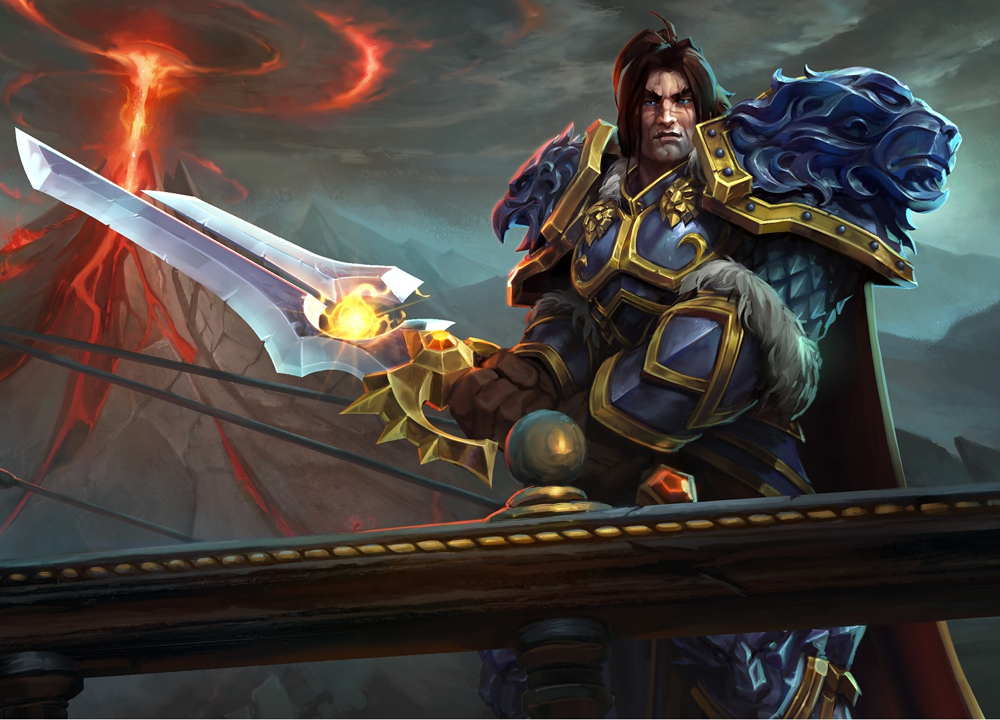
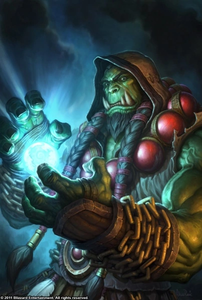

Rey Varian Wrynn
Ocupación: Rey de Ventormenta, Líder de la Expedición de Denuedo, Esclavo gladiador (previamente)

Pasado:
Varian Wrynn era hijo del Rey Llane Wrynn en el pacífico Reino de Azeroth; vivió prosperamente como príncipe de Ventormenta cuando era joven,
pero todo cambió cuando los orcos aparecieron a través del Portal Oscuro e intentaron destruir su tierra natal, así se inició la Primera Guerra entre su querido Reino de Azeroth y la vil Horda.
Anduin Lothar, el Campeón de Azeroth, congregó sus hombres de armas y sus soldados, luchando desesperadamente para mantener a la Horda en la bahía y así mantener al enemigo lejos del Rey, del príncipe y de Ventormenta. Aunque Anduin Lothar pudo contener a la Horda, un evento mayor sucedió, algo que nadie pudo predecir: Garona Semiorco (una semi-orca asesina, emisaria de la Horda en un principio), que se había convertido en aliada de Ventormenta, traicionó al Rey Llane bajo órdenes del “Consejo de la Sombra” (un grupo de brujos orcos que servian a la Legión Ardiente), le arrancó el corazón y se lo dio a Gul'dan. Varian observó horrorizadocomo su padre era asesinado al mismo tiempo que la Horda invadía su reino, quemaba los hogares y cazaba a todos aquellos que se interponían en su camino.
La muerte de su padre lo afectó en gran manera, luego se hizo amigo de Arthas Menethil quien recuerda lo vio cansado y harapiento cuando lo vio por primera vez, dijo que "lo había perdido absolutamente todo en su vida."
Con Ventormenta retomada y siendo lentamente reconstruida (gracias al Rey Terenas, quién insistió a la Alianza que ayudara en la reconstrucción), Varian, ahora adolescente, fue oficialmente coronado como Rey de Ventormenta, el mismo Rey Terenas se congratuló al observar como Varian se había convertido en un noble y justo Rey, sintiéndose como un padre para Varian tras haber pasado tantos años juntos. Los Stonemasons, ahora conocidos como Albañiles, liderados por Edwin VanCleef, se ofrecieron en la reconstrucción de Ventormenta, esperanzados de forjar un nuevo futuro para ellos mismos, con las aspiraciones de riqueza pronto vieron su trabajo completado.
Tras varios meses las reconstrucciones terminaron y ahora Ventormenta se había convertido en un lugar mucho más grande y hermoso de lo que había sido antes de la Primera Guerra.
Rey thrall

hijo de Durotan y Draka , es el antiguo Jefe de Guerra de la Horda chamánica restaurada , fundador de la nación de Durotar en Kalimdor y uno de la segunda ola de chamanes..
Sus padres asesinados por los asesinos de Gul'dan poco después de su nacimiento al comienzo de la Primera Guerra , fue encontrado y criado por Aedelas Blackmoore , quien le dio a Thrall su nombre.
Criado como esclavo y gladiador , más tarde se unióOrgrim Doomhammer en la liberación de los orcos encarcelados después de la Segunda Guerra , siendo nombrado Jefe de Guerra después de la muerte de Doomhammer"
Con Ventormenta retomada y siendo lentamente reconstruida (gracias al Rey Terenas, quién insistió a la Alianza que ayudara en la reconstrucción), Varian, ahora adolescente, fue oficialmente coronado como Rey de Ventormenta, el mismo Rey Terenas se congratuló al observar como Varian se había convertido en un noble y justo Rey, sintiéndose como un padre para Varian tras haber pasado tantos años juntos. Los Stonemasons, ahora conocidos como Albañiles, liderados por Edwin VanCleef, se ofrecieron en la reconstrucción de Ventormenta, esperanzados de forjar un nuevo futuro para ellos mismos, con las aspiraciones de riqueza pronto vieron su trabajo completado.
Tras varios meses las reconstrucciones terminaron y ahora Ventormenta se había convertido en un lugar mucho más grande y hermoso de lo que había sido antes de la Primera Guerra.